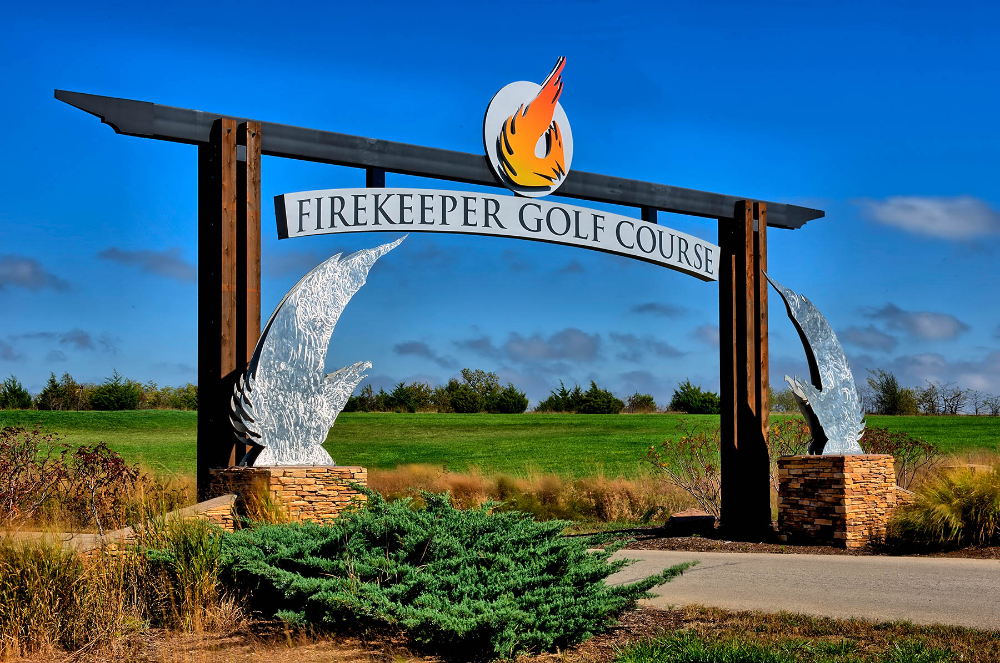

Golf
Team Nolan - 4x Golf Legend
- Captain - Nolan Miller
- Mike Miller
- Chris Hadden
- Josh Cochran
- Jesse Zeigen
- Adam Hosmann
- Luke Meier
- ???????
Team Bran - 4x Golf Legend
- Captain - Brandon Seim
- Josh Norton
- Chis Collins
- Kyle Swope
- Chad Coons
- Jon Urbom
- Eric Lyons
- ???????
Games & Rules
Friday Round
- 2-man best ball match play, each player plays their own ball
- Lower score from each team on each hole wins the hole
- Team that wins the most holes wins the match
- One head-to-head match needs to be strategically paired, match play
Saturday Round
- Singles head-to-head match play, think Ryder Cup final day
Lies
- Any ball not on the green may be rolled slightly with the club face only, to improve your lie within 6 inches of the initial position
- A ball cannot be rolled from rough to fairway, out of a bunker onto the green, or out of a native area
- A ball cannot be rolled closer to the hole
Lost ball and OB
- A ball hit out of bounds, into a native area, or tree line is a lost ball if not found within a few minutes
- 1-stroke penalty applies and the player drops and plays from the point of entry
- If the player chooses to re-tee after OB or lost ball, full stroke-and-distance applies, hitting 3 off the tee
Gimmies
- Gimmies are permitted at the discretion of each player
Day One, Hole 1 Tee Box
- Back by popular demand, the Annual Luke Meier $20 Mulligan will be live
